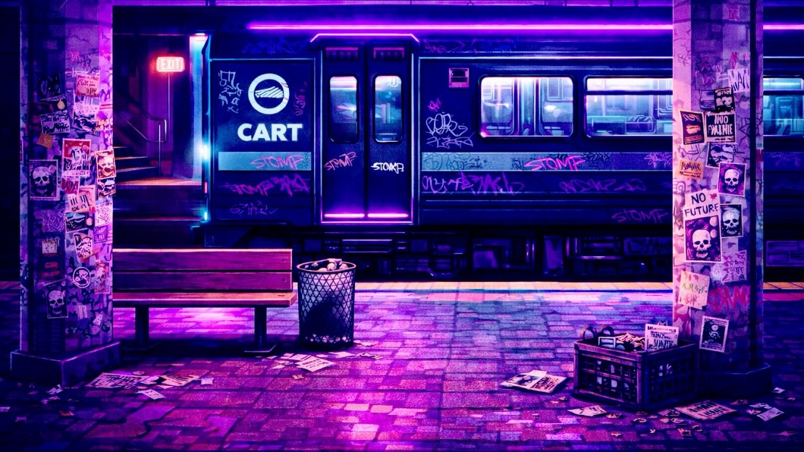

Bonus Installment: Leave Something Behind
Part of New & Improved™ — A deep dive into creating a culturally relevant video game.

I Lied
I said this series would be five parts. Which was true, until it wasn’t.
Somewhere between thinking through systems, spaces, acts, and endings, it became clear that something was missing. The quiet residue that all of those things leave behind. The parts of a city that change without a progress bar, a meter, or a victory condition attached.
So this is the bonus sixth piece. Let’s think of it as an epilogue. A place to talk about what lingers once the player stops moving, and why, if New & Improved™ is really about cultural resistance, it can’t all be tied to success or failure.
Sometimes, the most honest version of a project only shows itself after you think you’re done.
A Small Detour, for the People Who Stayed
A while back, I wrote an article called “Social Strands: Why a Highly Divisive Game Made Me Care About Strangers.” It was about how a game could quietly connect players without forcing interaction. How small, asynchronous traces left by others could make a hostile or lonely world feel inhabited. Not cooperative in the traditional sense. Just… shared. The presence of other people, implied rather than explained.
That idea sat in the back of my head throughout my design documentation process and, in fact, prompted me to write that article.
After five weeks of systems, districts, progression, and resistance mechanics, it feels worth mentioning. Not to introduce another lever or meter, but to talk about the things that don’t do anything at all. Or at least, don’t do anything measurable.
This is a thought experiment. A bonus track. A what-if.
What if New & Improved™ let players leave things behind? Not to advance the game, not to affect the city’s state, but simply to participate in it.
The Quiet Stuff
Imagine tags, stickers, and zines that don’t affect Street Cred, Subversion, or patrol routes. They can’t unlock anything. They can’t tip a system. They’re not tools. They’re artifacts.
A player might find a hand-drawn sticker on a subway wall that they didn’t put there. A zine tucked behind a bus stop bench. A wheat-paste poster, half-torn and layered over two others.
None of it changes the city mechanically. All of it changes how the city feels.
These traces wouldn’t announce themselves. They’d reward players who slow down or look twice. Those who treat the city as something that’s lived in rather than optimized.
Not progress, but presence.
Collecting Without Owning
Some of these objects could even be collected, maybe even as inventory items.
It could be a notebook page that logs what another player has experienced. Or other players’ symbols, phrases, sketches, or half-formed ideas. Accumulated, rare, and one-of-a-kind. There might even be useful items, like hacker codes, a scarf, or anything else you might imagine
You “earn” these things. You encounter them.
And sometimes, you might place something back into the world. Something you’ll never see again. Something that might matter to someone else – or not at all.
That uncertainty is the point.
A City Built by Many Hands
What this gestures toward is the same idea that “Social Strands” in Death Stranding circled. That connection doesn’t require coordination, and meaning doesn’t require acknowledgement.
Culture changes through accumulation. Through repetition. Through enough small acts that no one person can take credit for.
A single sticker doesn’t matter. A hundred don’t either. But thousands, scattered by strangers, start to feel like a presence.
New & Improved™ already frames resistance as work. It’s slow, risky, and often invisible. Small and persistent elements extend that idea outward. They suggest that meaning isn’t always attached to outcome. Sometimes it’s attached to participation.
Why This Matters (Even If It Does Nothing)
Games are very good at rewarding outcomes. They don’t often reward existence.
Letting players leave behind something that doesn’t “pay off” pushes back against optimization culture. It says. “You were here, and that alone matters.”
In a game about cultural resistance, that feels appropriate, doesn’t it?
Not everything needs to move a meter. Not everything needs to be legible. Some things just need to be shared.
After the Systems Settle
If you’ve read all five – now six – parts of this series, you’ve already participated in the idea that this bonus is talking about. You showed up. You stayed. You engaged with something unfinished.
New & Improved™ has been framed as a game, a manifesto, and a collection of systems. But it’s also a conversation shaped by influences, communities, and people willing to imagine alternatives.
To be truly disruptive, it doesn’t take a single designer. It takes a village. And sometimes, all that the village does is leave something behind.
No score attached.
Page formatted by Written & Formatted. © Tim Samoff.